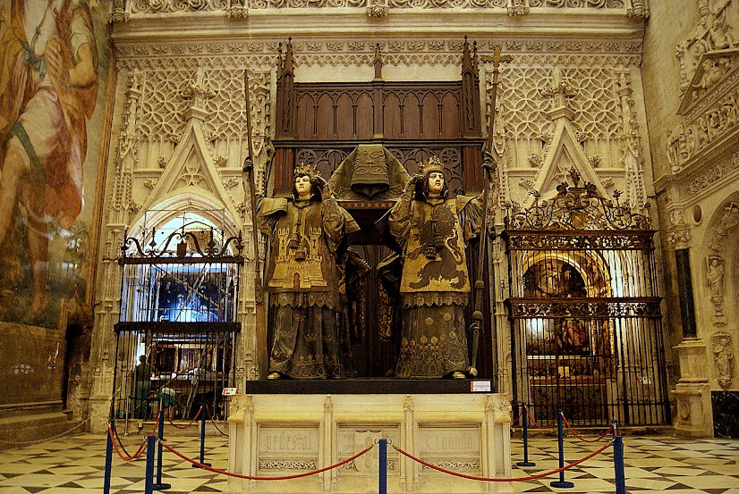
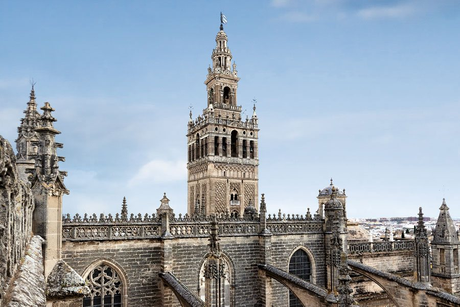

<div class="background-image">
  <div class="container">
    <app-galeria-imagenes [imagenes]="imagenesGaleria"> </app-galeria-imagenes>
    <app-menu-provincias
      [imagenIzquierda]="imagenIzquierda"
      [imagenDerecha]="imagenDerecha"
      [provincias]="provincias"
    >
    </app-menu-provincias>
    <div class="Monumentos-sevilla">
      <h1 class="titulo">Monumentos de Sevilla</h1>
      <div class="row">
        <!--Informacion Monumentos-->
        <div class="column">
          <div class="module imagenes-catedral">
            
          </div>
          <div class="module">
            <div class="Catedral-Informacion">
              <h1 class="module_header titulo" id="catedral_header">
                La Catedral
              </h1>
              <p class="style-texto">
                La Catedral de Sevilla te dejará perplejo por sus proporciones.
                Cuentan las crónicas que fue concebido por el Cabildo
                Catedralicio bajo las palabras
                <em>
                  «Hagamos un templo tan grandioso que los que lo vieren labrado
                  nos tengan por locos»</em
                >. Todo en la Catedral es colosal. Podrás admirar el retablo
                mayor, considerado por muchos una de las obras más destacadas de
                la historia del arte, o ver de cerca el mausoleo donde descansan
                los restos de <strong>Cristóbal Colón.</strong>
              </p>
            </div>
          </div>
        </div>
        <div class="column">
          <div class="module">
            <div class="Giralda-Informacion">
              <h1 class="module_header titulo">La Giralda</h1>
              <p class="style-texto">
                La Giralda de Sevilla es una torre de unas dimensiones sin
                comparación para una construcción de su época (desde el siglo
                XII hasta el XVI). De hecho, fue durante mucho tiempo la
                edificación más alta del mundo (101 metros contando el
                Giraldillo, la preciosa veleta que la corona y uno de los
                símbolos de la ciudad). La Giralda es una perfecta simbiosis de
                diferentes estilos arquitectónicos, de diferentes
                civilizaciones, una torre que comienza siendo alminar y termina
                siendo campanario. Cuando subas a su mirador podrás contemplar
                toda la ciudad, y a sus pies el Patio de los Naranjos y la mayor
                Catedral gótica que existe.
              </p>
            </div>
          </div>
          <div class="module imagenes-giralda">
            
          </div>
        </div>
      </div>
      <div class="mapa-ubicacion">
        <iframe
          width="425"
          height="350"
          src="https://www.openstreetmap.org/export/embed.html?bbox=-6.002225875854493%2C37.38327837709237%2C-5.990252494812013%2C37.38827388744003&amp;layer=mapnik"
          style="border: 1px solid black"
        ></iframe
        ><br />
      </div>
      <div class="informacion-visita">
        <h2>
          
          <i></i> DIRECCION Y DATOS DE CONTACTO
        </h2>
        <p><strong>Direccion:</strong> Avenida de la Constitucion, s/n.</p>
        <p>41004 Sevilla (Andalucía)</p>
        <p><strong>E-mail:</strong> info@catedraldesevilla.es</p>
        <p><strong>Tlf:</strong> +34 902 099 692</p>
        <p>
          <strong>web:</strong>
          <a href="https://www.catedraldesevilla.es"
            >www.catedraldesevilla.es</a
          >
        </p>
      </div>
    </div>
  </div>
  <!--Fin de informacion Monumentos-->
</div>
